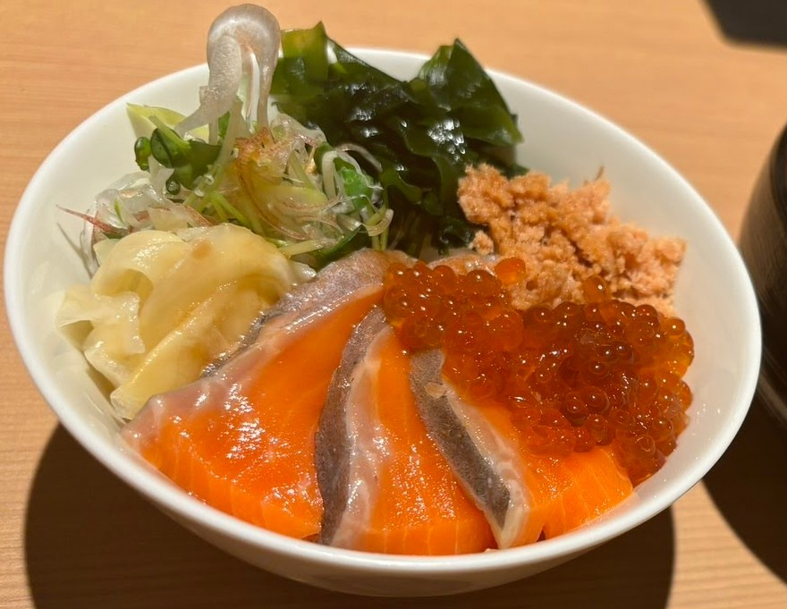

脂肪少ないの好き アフォガート旨い ピスタチオバター 茄子です Ocean good Table 向ヶ丘遊園 訪問日: 直近は2025年6月 ★★★★★ お肉！選べるコースがお手頃。飲み放題もあります。ボリューミーなのに小食の人でも全て美味しく完食できます。きれいで落ち着いた雰囲気。 地図で見る 続きを読む
ワインバー？ パテ Oldmansilence 訪問日: 直近は2025年6月 ★★★★★ ワインと食材にこだわった静かなお店。パスタ自家製、お肉も適量選べます。野菜が新鮮すぎる！ 地図で見る 続きを読む
オムレツ！ ボリューミーな前菜 aux hills オグジュアリー ヒルズ 訪問日: 直近は2025年5月 ★★★★★ ソファー席でくつろげます。曜日も関係あるのかもしれませんが、基本静かなお店。 地図で見る 続きを読む
満杯スパークリング レバーペースト！ 差し替えました こっちも差し替え！ 酒縁 竹に雀 訪問日: 最近（更新！） ★★★★★ こじんまりとしたカウンター席がメインのお店。ですが広くて居心地が良いです。 地図で見る 続きを読む
肉にはポテトなのね チーズチーズパスタ！ ポルタ・モンターレ 訪問日: よくいきます ★★★★★ いつも賑やかなお店です。店員さんもイキイキとされています。チーズとワイン好きには何度行っても飽きない！？ 地図で見る 続きを読む
オクラのジュレ タパス盛り合わせ キリンシティ 登戸店 訪問日: 平日いきます ★★★★★ いつ行っても大丈夫！？落ち着いたお店です。ふらっと立ち寄りたい、そんな時におすすめです。 地図で見る 続きを読む
ドレッシングも美味しい お肉＆野菜！ ソフトクリームパフェ クーポンもらった Park&Table のぼりと 訪問日: 2025年8月 ★★★★ 平日行きましたので空いていました。おそらく落ち着けるはず！？10％オフのクーポン♪ 地図で見る 続きを読む
刺身分厚い！  コースの〆どんぶり これもコースの1品 これも 魚三昧 ことぶきや 登戸店 訪問日: よくいってました ★★★★ 平日のハッピーアワーが幸せな気分になります。ビール一気飲み！ 地図で見る 続きを読む
生ハムのシーザーサラダ やっぱり肉とポテト ESOLA 登戸店 訪問日: よくいってました ★★★★★ ワイン飲み放題のお店です。セルフなので自分でグラスに注がないといけませんが・・・安い時は飲み放題が1,500円だったりしました。 地図で見る 続きを読む
ザ！ハンバーグです。 生ハムとモッツァレラチーズ ローストビーフ ポテサラ ステーキ&ハンバーグ チョッパー 訪問日: 2025年7月上旬 ★★★★ こちらも牛肉のお店です。ガッツリ食べてスタミナつけたい時にはおすすめです！ 地図で見る 続きを読む
紅ズワイガニのミモザサラダ カルボナーラ！ スモークサーモンのピッツァ アフォガート 北海道イタリアン ミア・ボッカ 訪問日: 2025年7月上旬 ★★★★★ 番外編です！新宿のお店です。ワインも美味しそうでしたがランチだったので食事に専念。。 地図で見る 続きを読む


.JPG)
.JPG)